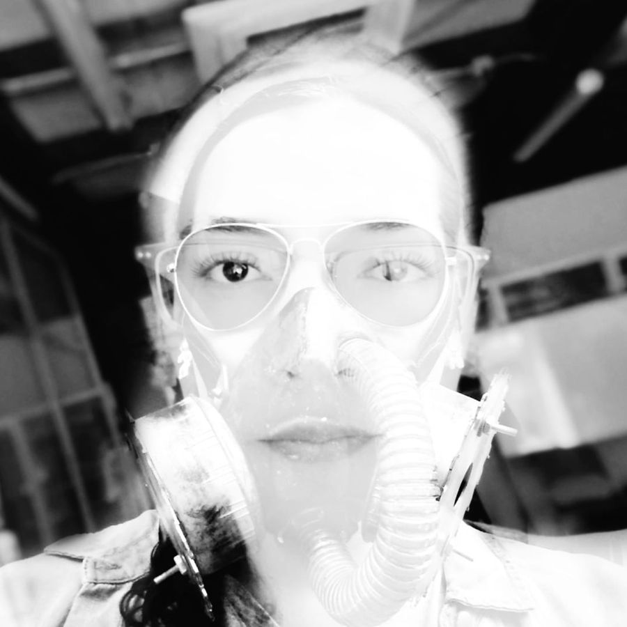

Celeste Betancur
composer · live coder · instrument builder · educator
Colombian artist working between notated music, code and hand-built instruments. Based at CCRMA, Stanford University.

Performances
- Oct 9 2026Low Frequency TrioCCRMA, Stanford CAVerso V
- Oct 3 2026Transitions: Primrose Ohling and CelesteCCRMA, Stanford CAFrom Within You
- Sep 29 2026Morton Feldman Centenary: Blackbox EnsembleCCRMA, Stanford CAStranded
- Jun 13 2026Inorganic Organ TransmutationsFountain Street Church, Grand Rapids MIAeon Sophia I
- Jan 2026The Return of the AmpsBing Studio, Stanford CAVerso III
The work
- 01
Music
Albums, concert works for ensembles, algorave sets and live-coded audiovisual performance.
- 02
Works
Catalogue of compositions: concert pieces, recorded works, live cinema and collaborations.
- 03
Code
Software instruments: Chrysalis, CQenze, CHmUsiCK and CineVivo, plus demos you can open in a browser.
- 04
Teaching
Workshops and talks on live coding, AI and sound; Semillero CineVivo; Festival ART in Medellín.
- 05
Instruments
Hand-built instruments, from a 24-fret guitar to Umbilical, presented at NIME 2026.
- 06
Press
Interviews, and television appearances on gender identity and rights.
In the browser
- Demo
AetherMapper
Opens in the browser.
- Demo
CQenze
Write patterns and hear them, no install.
- Demo
Algorithmic Scape
Opens in the browser.
Secretos del viento
Digital album, Pueblo Nuevo Records (Chile).